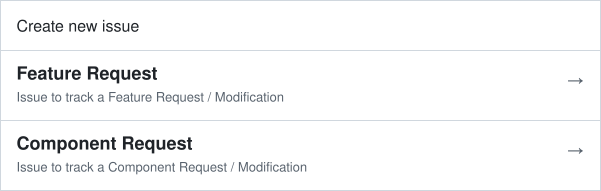
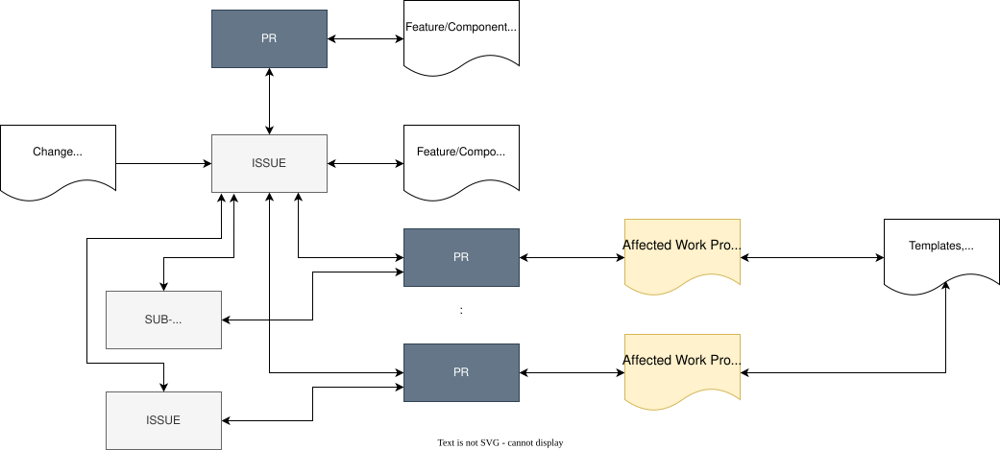
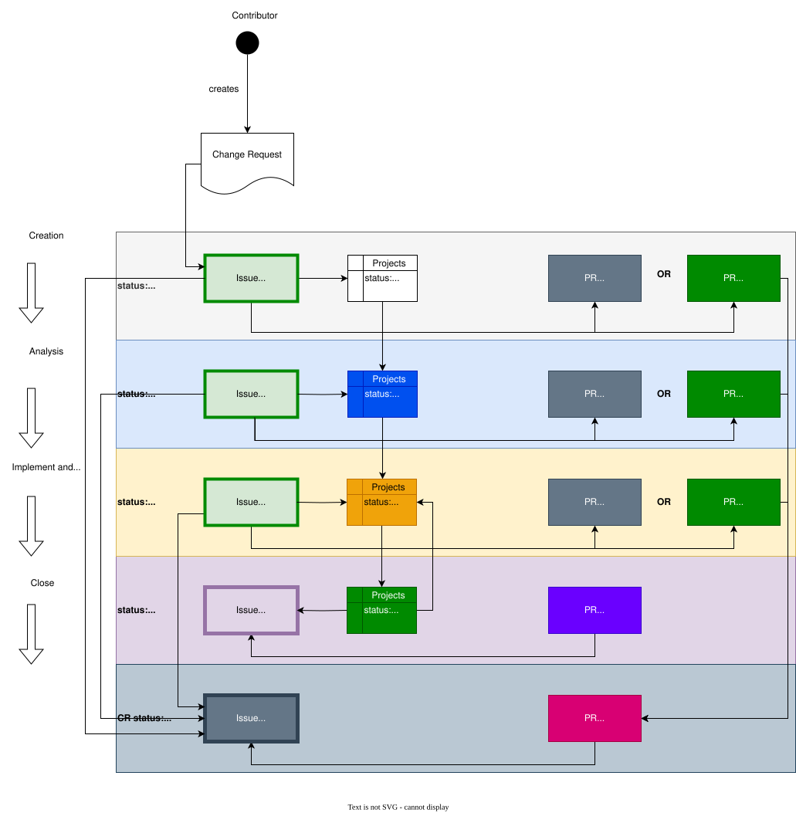

PF Change Management Plan
|
status: valid
security: YES
safety: ASIL_B
|
||||
PF Change Management Plan#
This document implements the applicable parts of wp__platform_mgmt.
Purpose#
The Change Management Plan defines how Change Requests are created, analyzed, approved, implemented, monitored, and closed within S-CORE.
A Change Request represents the introduction of a new feature or component, or a modification to the scope of an existing feature or component.
Objectives and Scope#
Change Management Goals#
The objectives of change management are to ensure that:
Change Requests are recorded and uniquely identified.
Change Requests are analyzed before implementation, including identification of affected work products and assessment of the expected impact.
Change Requests are approved before implementation begins.
Approved Change Requests are implemented and their progress is monitored.
Change Requests are tracked through closure and their status is communicated to affected parties.
Change Requests and affected work products are bidirectionally traceable.
Change Management Scope#
Change management applies to the work products and configuration items identified in the Configuration Management Plan (doc__config_mgt_plan).
It applies throughout the complete lifecycle of these work products and configuration items, as defined in the Lifecycle section of Configuration Management Plan (doc__config_mgt_plan).
This lifecycle scope is independent of the Expected Implementation Version or Milestone assigned to an individual Change Request according to gd_req__change_attr_milestone. The Expected Implementation Version defines the target release for implementing the Change Request; it does not limit the applicability of change management.
Approach#
Change Request Execution#
General contribution rules for S-CORE are defined in Contribution Guideline (doc__contr_guideline).
A Change Request is the controlled mechanism for introducing new features or components, or for modifying the scope of existing features or components in S-CORE.
Each Change Request is recorded as a GitHub Issue and implemented through one or more associated GitHub Pull Requests.
Change Request Infrastructure and Types#
Note
Relevant parts of the change management templates are incorporated into the GitHub ISSUE templates Feature Request and Component Request.
Use Feature Request for a new feature or a modification of an existing feature. Use Component Request for a new component or a modification of an existing component.


Fig. 22 Feature Request and Component Request ISSUE templates#
A Change Request ISSUE may reference other ISSUEs or SUB-ISSUEs to decompose and manage more complex changes.
Implementation of an accepted Change Request requires at least one PR linked to the corresponding Change Request ISSUE.


Fig. 23 Change Request Overview#
Change Requests are classified into the following types:
Type |
Description |
Infrastructure |
|---|---|---|
Feature |
Introduction of a new feature and its associated work products. |
ISSUE of type |
Feature Modification |
Modification of the scope of an existing feature or its associated work products. |
ISSUE of type |
Component |
Introduction of a new component and its associated work products. |
ISSUE of type |
Component Modification |
Modification of the scope of an existing component or its associated work products. |
ISSUE of type |
The ISSUE type is determined by the selected ISSUE template. The label distinguishes a new feature or component from a modification of an existing one. It is assigned by the rl__contributor or corrected during review by a rl__committer.
Change Request traceability and impact analysis are supported by the following tool requirements:
The FEP Track#
Feature: always follows the FEP Track.
Feature Modification: follows the FEP Track if the change has major impact, for example if it affects the platform or other Feature Teams. Changes limited to the responsible Feature Team’s domain may follow the standard workflow.
Component: follows the standard Change Request workflow.
Component Modification: follows the standard Change Request workflow.
Whether a Feature Modification constitutes a major change cannot be determined solely by a fixed set of criteria. The responsible rl__committer evaluates the impact in the context of the proposed change.
A change initially considered major may be excluded from the FEP Track by community agreement if the additional governance process is not considered necessary. Conversely, a proposed modification may be moved to the FEP Track if its impact is subsequently determined to be major.
The baseline definition of a change is provided by the Key Concept in
process_description.
Component and Component Modification Change Requests do not require a Shepherd or Final Comment Period. The responsible team may nevertheless create a Decision Record if a persistent record of the rationale is considered valuable. Creating such a Decision Record does not by itself place the Change Request on the FEP Track.
The FEP mechanism is not inherently restricted to a particular Change Request type. Its current application to Features and major Feature Modifications defines the current S-CORE process. Applying it to additional Change Request Types requires an explicit process decision.
FEP tracking ISSUE statuses refine the generic Change Request status model:
FEP tracking ISSUE status |
Generic Change status |
Meaning |
|---|---|---|
|
open |
Proposal exists, but no Shepherd has been confirmed. |
|
open |
A Shepherd has been confirmed and the proposal is being prepared. |
|
in review |
The proposal is in the Final Comment Period. |
|
in implementation |
The FEP has been accepted and recorded as a Decision Record. |
|
rejected |
The proposal was rejected or withdrawn. |
|
in implementation |
Implementation is ongoing and may be represented by linked or child ISSUEs. |
|
closed |
The planned implementation has been completed. |
Change Request Attributes#
The attributes required by gd_req__change_attr_uid are represented in the Change Request infrastructure as follows.
- gd_req__change_attr_uid
The Change Request identifier is the GitHub ISSUE number.
- gd_req__change_attr_status
The Change Request status is derived from the ISSUE state, the Projects dashboard status, and the status of the associated PRs.
Change Status |
ISSUE State |
Projects Status |
Linked PR Status |
|---|---|---|---|
open |
|
|
|
in review |
|
|
|
in implementation |
|
|
|
closed |
|
|
|
rejected |
|
n/a |
n/a |
- gd_req__change_attr_title
The Change Request title is the GitHub ISSUE title.
- gd_req__change_attr_impact_description
The initial impact description is recorded in the Feature/Component Request description and impact-analysis sections of the ISSUE. Detailed analysis may subsequently be documented in associated PRs using the applicable request and Impact Analysis templates.
The request date is the ISSUE creation date and is recorded automatically by GitHub.
The starting configuration is the state of the main branch, or the
applicable baseline, when the Change Request is created. Where applicable, this
state can be identified by the base commit of an associated PR. It is distinct
from the Expected Implementation Version, which defines the target release for
the requested change.
Additional implementation information may be maintained in associated PRs.
gd_req__change_attr_impact_safety and
- gd_req__change_attr_impact_security
Safety and security relevance are recorded in the corresponding sections of the ISSUE.
The applicable classification shall be selected as none,
Safety relevant, Security relevant, or a combination of safety and
security relevance. If none is selected, the change is considered
Quality-relevant only.
The expected ASIL classification is recorded in the corresponding ISSUE field,
for example QM or ASIL_B.
- gd_req__change_attr_types
The Change Request type is represented by the ISSUE template (
Feature RequestorComponent Request) together with the corresponding Change Request label.- gd_req__change_attr_affected_wp
Initially affected work products are recorded in the Expected Changes of Work Products section of the ISSUE. Additional affected work products identified during analysis or implementation are recorded in associated PRs or linked ISSUEs.
- gd_req__change_attr_milestone
The planned target release is recorded as the Expected Implementation Version. A GitHub Milestone may additionally be assigned.
For an accepted Change Request, implementation responsibility is recorded through the assignees of the Change Request ISSUE and/or its linked implementation ISSUEs and PRs.
Change Request Workflow#
Every Change Request follows four principal steps:
Create the Change Request.
Analyze and decide on the Change Request.
Implement the accepted Change Request and track its realization.
Close the Change Request after successful completion.
The colors used for these steps correspond to the Change Request Simple Workflow Overview shown below.
gd_guidl__change_change_request provides additional guidance.
1. Create the Change Request#
A Change Request shall be created as a GitHub ISSUE using the Feature Request or Component Request ISSUE template.
The selected template establishes the appropriate ISSUE type. The corresponding Change Request label defined under Change Request Types shall then be assigned.
The ISSUE title shall summarize the proposed change, and the template shall be completed with the available information about the request, expected impact, affected work products, and intended target release.
Detailed Feature or Component Request information and, where applicable, the Impact Analysis are maintained as part of the Change Request and its associated PRs.
For a new feature or component, the applicable gd_temp__change_feature_request or gd_temp__change_component_request template shall be used.
For a modification, the affected existing work products shall be updated.
Where applicable, the gd_temp__change_impact_analysis shall be completed.
At least one implementation PR shall be linked to an accepted Change Request before its implementation can be completed.
Planning is recorded through the Expected Implementation Version. A GitHub Milestone may additionally be assigned.
The initial Change Request status is open:
ISSUE state:
OpenProjects status:
No StatusAssociated PR:
DraftorOpen, if already available
To initiate review, the Change Request transitions to in review by keeping
the ISSUE Open and setting its Projects status to Todo.
A Change Request that is rejected is closed using Closed as not planned.


Fig. 24 Change Request Simple Workflow Overview#
2. Analyze the Change Request#
The Change Request is analyzed to determine its completeness, impact, feasibility, affected work products, required implementation and verification activities, and relevant safety or security implications.
For Change Requests following the standard workflow, a rl__committer reviews the Change Request. Identified issues are resolved by the rl__contributor, and the analysis results are documented in the ISSUE and/or associated PRs.
While additional information or review is required, the Change Request remains
in review with ISSUE state Open and Projects status Todo.
For Change Requests routed through the FEP Track, the analysis and decision process defined by Feature & Enhancement Proposal (FEP) replaces the standard analysis process.
The decision to accept or reject the Change Request shall be documented. Where safety or security relevance is applicable, the corresponding experts shall review the classification and impact.
gd_chklst__change_cr_review provides the applicable review criteria.
An accepted Change Request transitions to in implementation by keeping the
ISSUE Open and setting its Projects status to In Progress.
A rejected Change Request is closed as Closed as not planned.
3. Implement and Track the Change Request#
For an accepted Change Request, the rl__contributor initiates the activities required to implement and verify the change.
Implementation may be decomposed into additional ISSUEs and PRs. All such implementation items shall be linked to the Change Request ISSUE to maintain traceability and enable progress monitoring.
Implementation continues until the required activities have been completed and the associated ISSUEs and PRs have been closed or merged, as applicable.
Once implementation and verification are complete, the Projects status is set
to Done to initiate the final closure review by the
rl__committer.
If the Change Request is rejected or abandoned during implementation, the decision shall be documented and the ISSUE shall be closed using the applicable rejection state.
4. Close the Change Request#
The rl__committer performs the final review to confirm that the accepted Change Request has been completely implemented and verified.
The review confirms, as applicable, that:
required implementation activities have been completed;
associated ISSUEs are closed;
required PRs are merged;
affected work products have been updated;
required verification activities have been completed successfully;
verification results provide sufficient evidence that the change has achieved its intended purpose; and
required traceability is complete.
gd_chklst__change_cr_review provides additional closure criteria. The affected realization work products are reviewed according to their applicable review checklists.
If all closure criteria are fulfilled, the ISSUE is set to Closed.
If further implementation or verification is required, the ISSUE remains open
and the Projects status is returned to In Progress.
Change Management SW Platform Work Products#
Not applicable.